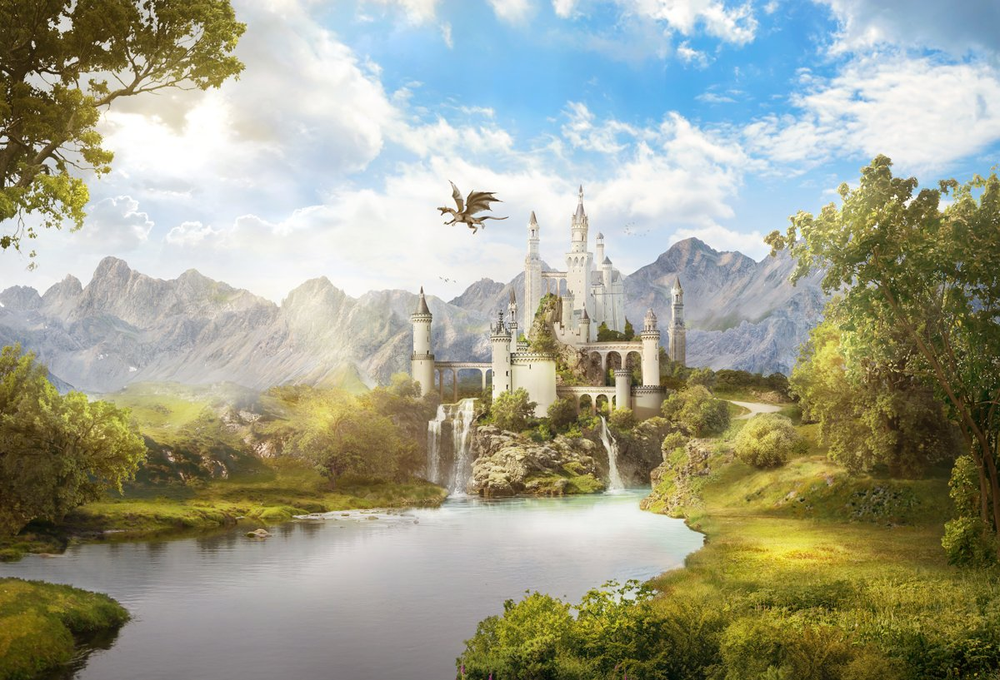
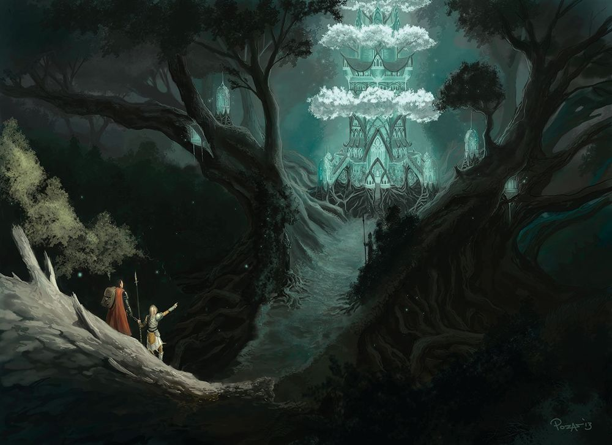
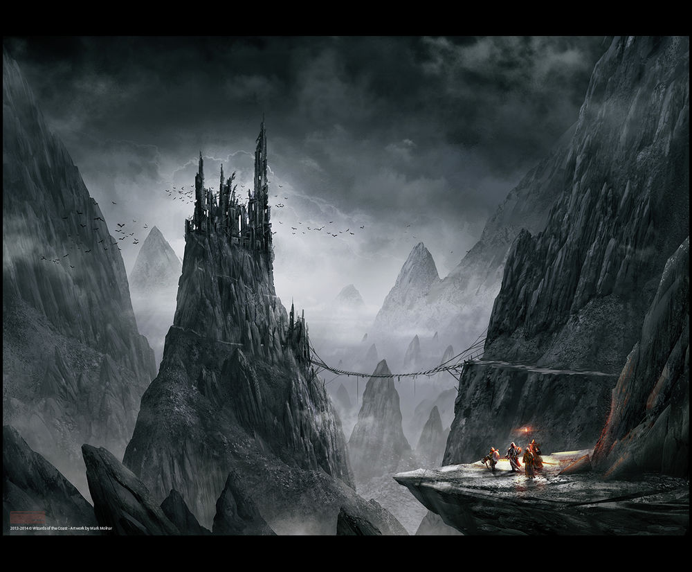
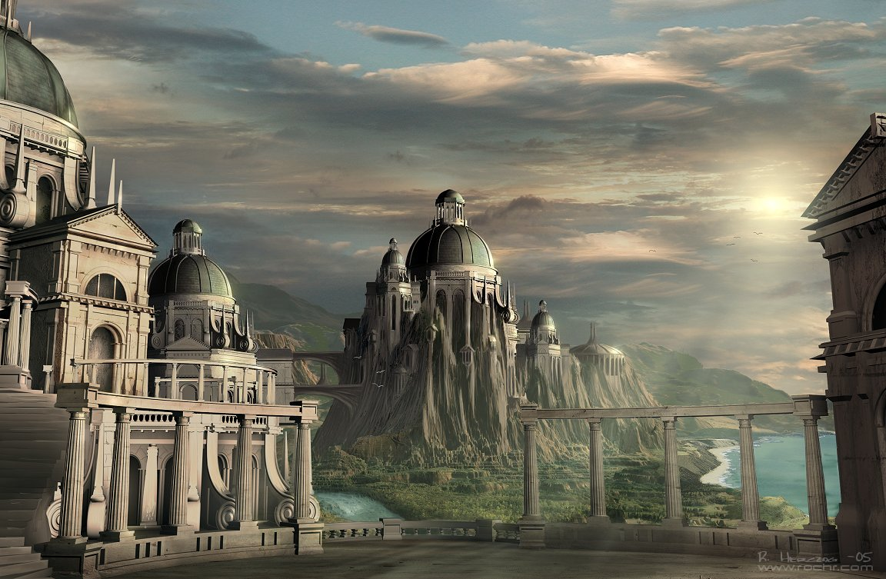
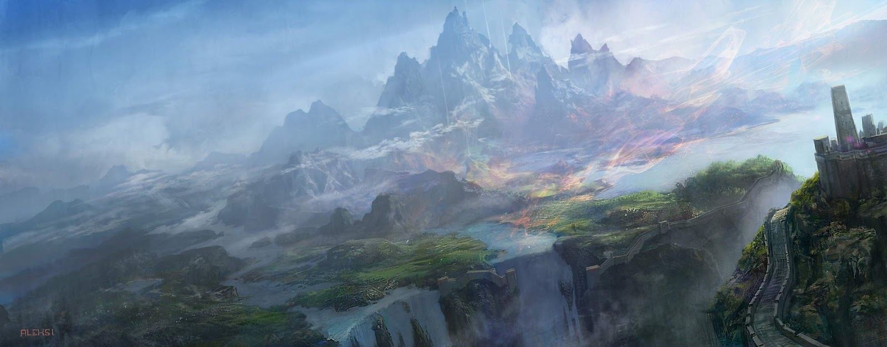
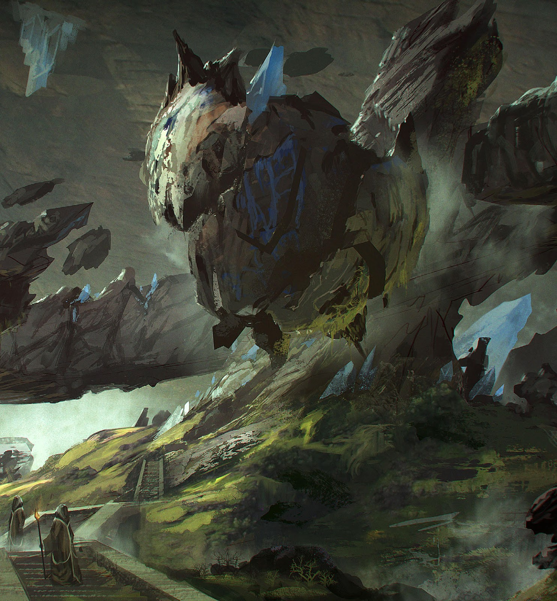
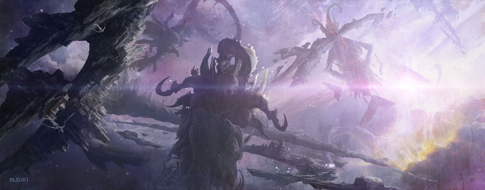
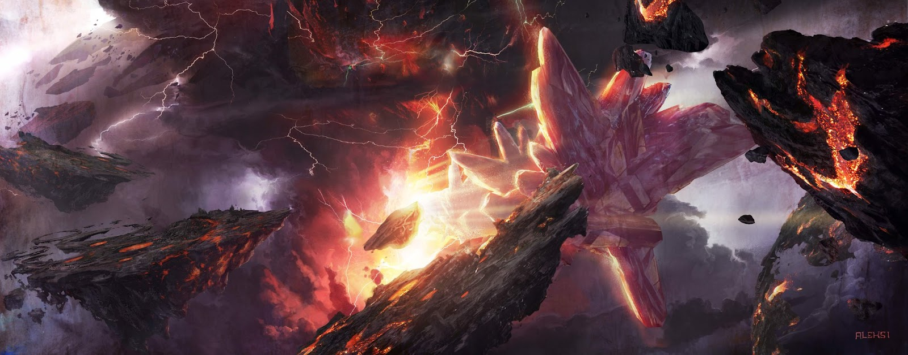

Many Worlds Floating on a Celestial Sea
### Introduction
The Sea is vast and boundless; a black void upon which the many planes float -- or at least, so it is thought by its inhabitants.
For "the Sea" is not quite a Sea in the literal sense, nor are the many planes the various islands and continents that rise from it, but such a description is perhaps still apt, as this "betweenland" is more vast and unimaginable than the largest ocean.
Indeed, the Celestial Sea has its shallows, and its depths, and for the few travellers that do brave the journey between worlds, it often takes the form of a black ocean, under a black, turbid sky, with only faint dim wisps of sunlight floating around, acting almost like mist, telling apart here from there.
How one "sets sail" or "pull into harbour" is not clearly known, and futhermore, with the proximity of the Near Realms and the inaccessibility of the Far, few really do sail into the true depths.
### Contents
The Near Planes
### Introduction
The *Near Planes*, are a series of three realms, that form the heart of the sea. They are close, as close as can be, even "touching" in some places, allowing travel via ancient teleportation magic. These are where the "mortal people" live: the men, the elves, the dwarves, the dragons, and the demons to name just a few; and are at the centre of the Gods' great dance.

### The Material Plane
【中】人間、人界
The Material Plane is the homeland of most of the major races of the world, and the most lively place where the wills of the Pantheons clash, and create a vibrant and alive world which is ever changing. Eras come and go, and many thousands of generations have left their mark on this world. It is often a harsh, unforgiving place, yet can also be lush and bountiful.
The Material Plane is, as far as anyone knows, never-ending. Oceans stretch east, west, and south, for thousands and thousands of leagues without sight of land. The North is cold and barren, and far enough north the world splits and cracks, creating a cavernous ravine system that stretches further than the strongest creatures can withstand.
It is theorised that there are indeed lands out there, far away over the waves, yet none have been found.
The Material Plane
### The Twilight Vale
【中】靈間、靈界
The Twilight Vale is akin to a reflection of the Material Plane, the original home of the Elves. It is a quiet, tranquil world ever bathed in twilight, where all is quiet and peaceful, and covered in expanses of forest. Great cities and fortresses in the Material Plane seem like thousand year ruins in the Twilight, and vice versa. There is no rhyme or reason to this rule, and sometimes ruins may mysteriously appear and disappear in this mirror realm.
Whilst it is called the twilight, only the central stretch of lands are in the twilight state. To the north, far beyond the horizon where anyone can see, are three cold moons, and to the south, again far over the seas, are seven scorching suns, still in the sky. People say that the north lies an passage into the far realm of Faewyrne, and the south to Isia.

The Twilight Vale

### The Deep Dark
【中】魔界
A grey, barren world bathed in only a faint moonlight from a hidden moon, where lost souls wander in eternal torment. No plant life could hope to survive, and the kingdoms of this world are ruled by shades and demons. In the deep valleys the black shadow of *Golmak* reigns, which consumes all that would even tough it. The dark is ever present, and light is sacred. Where light does not reach, unwitting wanders would be slowly consumed by the darkness, pulled into the shadows from which they never return.
In the deepest valley of the Deep Dark is a black river, that flows countless miles, and exits in the south onto a black sea, *the* black sea. Across this sea many hundreds of thousands of miles, lies an island; the Port of Mors, an entrance into one of the nearest "Far Planes".
The Far Planes
### Introduction
The *Far Planes* are many "islands" scattered through the sea, some nearer, some further, floating around the central three. These "islands" are numerous, and their distances can only be described as "far" and "further", with no true way of measuring distance on the Celestial Sea, as one would do in the Realm of Man.
To Reach the Far Planes, one must brave the Celestial Sea. For nearer destinations one may just sail the shallows, a relatively safe affair, but for the further planes, the depths of the sea yield no mercy; few have dared to sail far, and none have ever succeeded.

### The Heavenly Court
【中】天庭法院
Ruled by the Seven Sons of Estia, the Heavenly Court is a gathering place of lesser gods and spirits, occasionally visited by the old deities. Originally built from an unformed island by Xiron and Kleios, the Heavenly Court maintains order between deities, and acts as arbiter in time of dispute.
The Lower Courts are used to judge the dead, to either punish or reward them on their merits whilst alive, however like any good legal system waiting times are long, and many often wait over a hundred years before being seen. With time not quite working as it does normally though, this is simultaneously a very short, and an excruciatingly long wait.
The lands around the Heaveny Court can be described as "mountainous", with tall crags and lush valleys, inhabited by celestial beings, and basked in an eternal day, provided by three suns high above.
### The Eternal Mountain
【中】太山，小仙界
The Eternal Mountain is where exalted souls go. Here is heaven, in the classical sense, a paradise world for those who were good, and those who were just. In the centre of the world is the mountain itself, Tai, its height unfathomable to any mortal being.
It is said that at the peak of this mountain is a solitary gate, a gate that if open, leads directly to the outer realm of Estia. None, however, have even climbed the mountain, as it would be a great disrespect to the Old Gods to do so.


### The Nine Tiered City
【中】九泉城、黄泉城、地獄
The Nine Tiered City, The City of Yellow Springs, also known as the City of **Mors**, is where the souls of those who were wicked, and those who were corrupt are sent. Here, these wretched suffer eternal torment, depending on which tier they are condemned to. The ruler of this realm is known as Aligheri, once a man so wretched and cruel, even the torment of Mors could not touch him.
Mors sits upon an "island", an island of black basalt and lava rivers, that run into a the pitch black celestial sea. On the island's shore sits a port, where no ships dock, and to sail north through the Sea from Mors, one would reach the Deep Dark, and return back to the Near Realms.
### The Unformed Lands
【中】未形之地、神棄之域
The Unformed Lands are a series of lesser realms, floating around the Sea, that are said to be unfinished, or failed dimensions, many forsaken by the gods.
In these realms, chaos is everywhere, and the world defies all known laws of operation. Within these reside elementals, beings formed of only the base constituent elements that make up the world. Earth, air, fire, water, and so on.
No mortal has stepped here. These are hostile places.

### Planes of the Greater Pantheon
Each God of the Greater Pantheon is said to inhabit their own plane, a place crafted to each's desires. They sit outermost of all outer planes, and are lands often beyond mortal comprehension.
No mortal, not even a lesser god could ever hope to reach these far regions without help, nor do these far inhabitants ever particularly deign to venture inwards, and only do so on the rarest of situations.
The only thing that reaches across the far seas are prayers and sacrifices, though whether the gods they are aimed towards responds is another matter entirely.
#### Asyr Shai: The Kingdom of Ash
*Asaerakh*;【中】灰紅之國
A realm of fires and swirling clouds of ash, storm clouds and thunder, through which Asyr's spirit permeates, omnipresent and all-seeing. It is said that within this realm floats a palace of grey mist, with a long table in a grand hall, and a throne where her body sits in meditation.
#### Xiron Shai: The Realm of Diamond
*Irakon*;【中】萬晶界
A realm of eternal day, with sunlight shining down onto an endless lake, which sits still, reflecting the blue sky, much like the water on top of a salt flat. The sunlight is almost blinding, though in the sky is no discernable sun. While this is the most basic form of the world, its owner can alter it at will based on his wants.
#### Valaan: The World Tree
*Faelara*;【中】通天之樹
Valaan's realm resembes a vast world-tree, with a canopy stretching infinitely tall and wide, yet still letting a soft sunlight permate through its branches, shining down into the bottomless grey mist below, where no ground is to be seen.
#### Marí: The Land of Icy Moons
*Isia*;【中】寒月國
Eternal rolling hills of snow, ice and permafrost, interspersed with crystalline trees and tall spikes of ice, all underneath a dark grey sky, from which occasional snows fall. Three baleful moons shine down, casting a cold white light on the dark land. In the centre of this world is an ice palace, which is Marí's throne.
#### Cerí: The Land of Scorching Sun
*Faewyrne*;【中】烈陽域
Cerí's land is one of a vast tropical sea, interspersed with desert islands and atolls, atop which tropical trees grow. In the clear azure waters a dense forest of coral grow, stretching out as far as the eye can see. In the centre of this world is an island as large as a continent, overgrown with jungle, with a gargantuan rainbow eucalyptus, on which is Cerí's throne.
#### Estia: Paradise
*Paradeisos*;【中】大仙界
Paradeisos does not have one defining feature, but rather is a different paradise for different people, being eternally warm and friendly, with mythical creatures dancing through the eternal spring sky. In a forgotten corner of this world stands a door of light, tightly shut, having not been opened in many eras.
#### Jin Syian: The Celestial Empire
The Nine Provinces, *Shenjou*;【中】神洲、九州天國
Jin Xian's realm is similar to the material plane, with mountains and seas and planes and forests, and at its centre is a large continent, with long rivers many millions of *li*, flowing from the far western mountains, to the vast eastern sea. The fertile lands they flow through are so-called "Nine Provinces", controlled by a vast dynasty called Jin. The Emperor of Jin is Jin Syian himself, and is known to the people of the land as the Yellow Emperor〔黃帝〕.
In a way Shenjou resembles the Ancient Empire of the Material Plane, and indeed, it is from the Scholar-Emperor Jin Syian, that the continent of Aseron saw a vast dynastic empire built on an expansive bureaucracy, lasting until the present day.
The People are live in Shenjou, and neighbouring Syijai (below) are much like the humans of the material plane, though here there are no races of other gods, and the two planes can hardly be compared.
#### Jin Jou: The Western Marches
*Syijai*;【中】西寨
Jin Jou's realm is immediately west of Jin Syian, and if one were to travel the long distance over the western moutnains, they would reach the hostile land under Jin Jou: a rugged, bleak, mountainous land, in which are built colossal mountain strongholds, from which he raises a vast army, that is always raiding east, forcing Shenjou to respond. Though this war has carried on since antiquity, in reality the common people live mostly in peace. Here, Jin Jou is called the Black General〔玄將〕, the opposite of the Yellow Emperor.
#### Kleios: The Eternal Library
【中】仙書藏
As described, Kleios's realm can be described as an infinite library of books and scrolls, through which the scent of rosewood incense wafts, and Kleios sits, studying, or writing.
It is said that Kleios's library can be entered once reaching the western edge of Shenjou's sea, though no one knows how many millions or billions of *li* that may be, nor has anyone reached it themselves, except of course for the detities, who can simply will themselves there.
#### Kreig and Ingvar: The Indomitable Mountain
*Pak Dur*;【中】永恒山
This is a land of tall mountains, where all is stone and snow-capped peaks, however the surrouding mountains pale in comparison to one, in the centre of the world, called Pak Dur. The plane gets its name from this mountain, as it stretches to the clouds, towards a cold blue sunless sky, unimaginably wide and strong. Deep within this mountain is Krieg's throne, and beneath that is the vast forge of Ingvar.
#### Chara: Land of Crimson Moon
*Chirenia*;【中】緋紅月下
Chara's world is a world of night, lit only by a large crimson moon in a black sky. The world beneath is barren, with wisps of wild magic wandering around like morning mists. Chara herself has her palace on that crimson moon, where she looks over the vast lands beneat.
#### Moira: The Palace of False Heaven
【中】僞天殿
Moira's plane of existence defies explanantion more than most, and remains a vague mystery, hence its name. It is also one of the furthest out in the sea, yet the tendrils of fate permate throughout its celestial waters, into the many closer planes.
The Celestial Sea
The Celestial Sea itself forms a world between planes, an ethereal realm that permeates all worlds.
Whilst it is not a plane in and of itself, that does not mean it is devoid of life; rather astral travellers, even "pirate bands" wander through the well-travelled realms, and mysterious creatures lurk in the abyssal deep.
Within the sea one can find "islets", islands of stability that allow habitation of some kind -- examples of the Unformed Realms that do bear habitation.
In the ocean, many islands and rocks are scattered near the coasts next to continents, whereas deep in the blue seas only disparate island chains exist, far and few between. The Celestial Sea is much similar, as the "shallows" of its black "waters" bear many small planelets close to the near realms, whilst deeper in the depths, these islands become rarer, and also far more hostile to flesh-and-blood life.

### The Shallows
The shallows are the name of the region closest to the near realms. When one travells into the so-called astral plane, they are merely sailing the shallows of the Celestial Sea.
Here, visitors are relatively frequent, whether finding shortcuts within a world, discoving the planelets that surround their home realm, or braving the journey between planes, the shallows between the three inner realms is comparatively well-trodden. Time flows relatively normal here, having the strong influence of the three inner planes.
Even still, the shallows are vast, more vast than the Material World, the Deep Dark, or the Twilight Vale, and thus still contains dangers known and unknown.
To describe what it looks like, the Shallows would often form to a traveller as a void with a dark grey overcast sky, occasionally casting rays of white-violet sunlight down, though no sun is perceptible through the clouds. Below is a dark grey, almost black sea, rippling with light waves in imperceptible wind. One enters and exists through pillars of light, that form the shape of doors, that permit travel.
There is no gravity outside the planes, and one can very well walk on the water, or fly through the sky, sail on the waves in an astral ship, though the traveller must remember to never venture beneath the waves, for that is toying with fate.
In the shallows, pirate bands ride on otherworldly vessels, unknown civilisations float through the clouds, or live on remote planelets, unknown and unfound, ever hiding. It is still a hostile world, and direct teleportation arrays are always prefereable to sailing the seas.
### The Depths
Far from the shallows, comes the depths. Here, the sea and sky becomes black, and wisps of disconnected sunlight float around like mist. Occasionally, things will "float" in the sea, shattered remanants or pieces broken off from other planes, that have somehow found their way into the deep sea.
Planelets can also be found here, though they are often much more chaotic and incomplete, more like the classical description of the "Unformed Lands". It is said that elementals are born in these places, and somehow make their way towards shore.
Deep beneath the ethereal waves, unknown creatures lurk in the blackness, swimming through the world between worlds.

### The Abyss
The Abyss is the deepest part of the sea. It is the name given to the sea outside the ring of outer planes, beyond the realm of greater gods. It is also the name given to a few regions of the depths, where the water is deepest, and not even the sea creatures venture.
In these regions, there is no sunlight, no sky, and the foam of waves show up in eerie black and grey. Magic goes awry, both order and chaos fail, and the only thing remaining is fate;
Moira, it is said, lives atop such an abyss, *the* Abyss, as called by the Gods, and legends say that his Palace of False Heaven exists to restrain, to imprison what unknown entities would be cast into the abyss below.